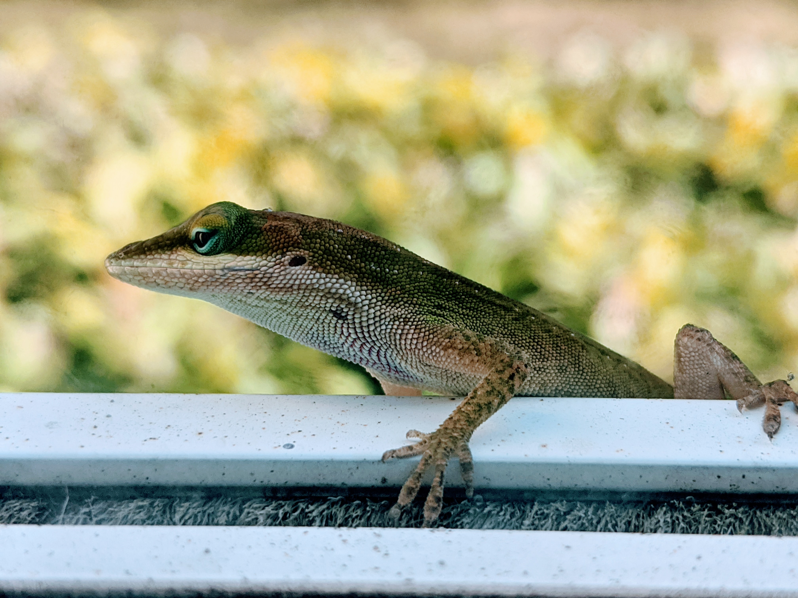
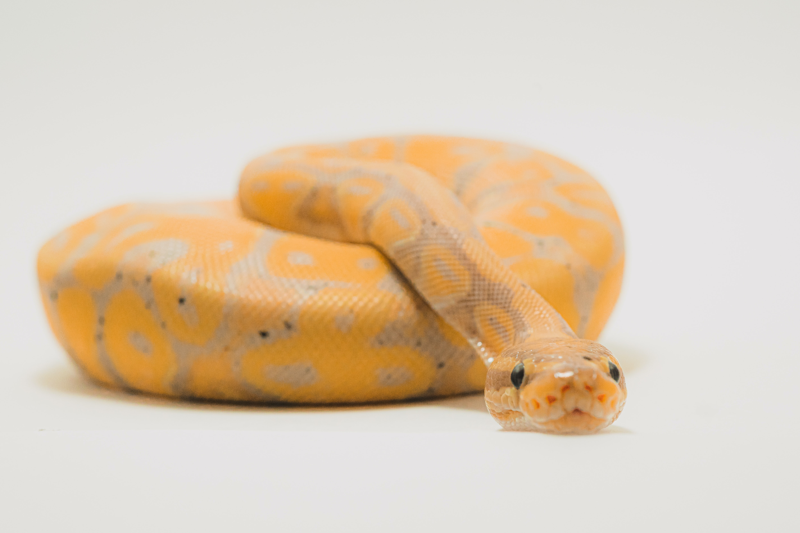
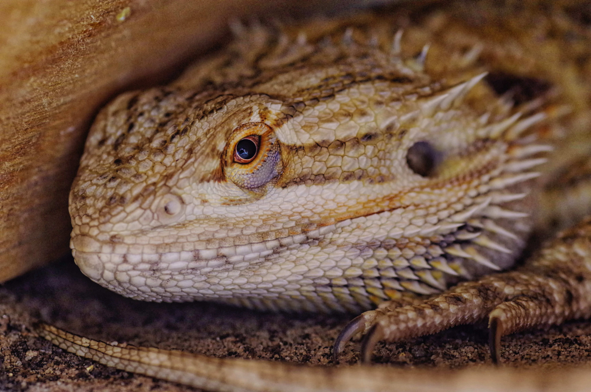
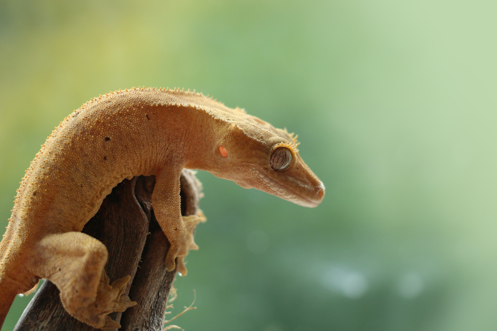

Espèces pour debutants
Quelles sont les espèces les plus faciles de maintenance ?
Certaines espèces sont plus faciles a acquérir pour un debutant, ce qui les rend plus attrayantes pour un personne qui vient juste de commencer et achête un terrarium pour la première fois. Pour définir ces espèces dites "faciles", il a fallu se baser sur plusieurs critères qui les rendent idéales, qui sont :
- Leur disponibilité : quand on commence, il peut être difficile de trouver l'animal que l'on veut, car l'on n'a pas encore les contacts nécessaires et on ne connait pas les moyens les plus éfficaces pour s'en procurer. Cela est aussi valable pour le matériel nécessaire, la nourriture, ... Voila pourquoi il est important de choisir une espèce facile d'accès comme premier animal.
- Leur prix : au début de tout hobby, on ne sait pas encore s'il va nous plaire, et on n'est donc en général pas enclin à utiliser de grandes sommes d'argent dans celui-ci. Cela est aussi valable pour un terrarium, et le prix de l'installation et de l'animal est un critère essentiel pour beaucoup de personnes.
- Facile à loger : la majorité des gens n'ont pas un espace immense à consacrer à un animal. En effet, la majorité du temps, on en choisit un à cause de la place qu'on a chez soi, et il est rare de chosir un animal et ensuite l'espace qu'il aura. C'est donc ce qui rend l'espace qui lui sera reservé est un critère très importants dans le choix d'un animal.
- Facile à nourrir : un animal avec une diète specifique et qui refuse de manger est une grand facteur de stress pour un débutant qui ne sait pas y reagir. Il est donc essentiel que l'espèce choisie soit facile à nourrir et tolérante.
- Facile à manipuler : il est toujours satisfaisant de pouvoir toucher et interagir avec son animal. Certaines espèces sont plus adaptées à ce genre d'activités, tandis que d'autres stressent facilement et sont fragiles, ce qui les rend impossibles à manipuler. Cela est d'autant plus vrai pour une personne qui commence, il est donc important de choisir une espèce manipulable pour eux.




Il est donc essentiel de considerer tous ces critères lors du choix d'un animal et les adapter selon vos besoins, envies et contraintes jusqu'à trouver celui qui vous convienne le mieux.